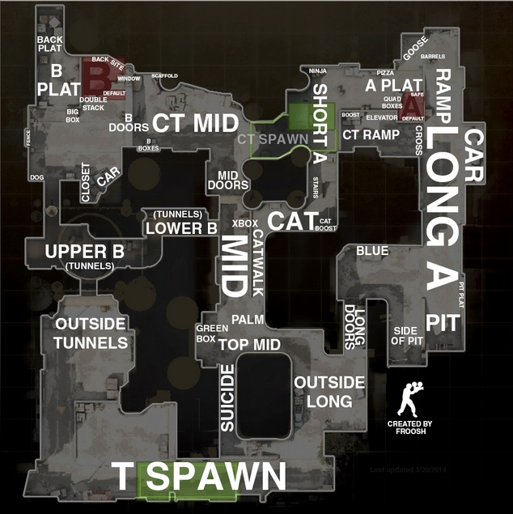
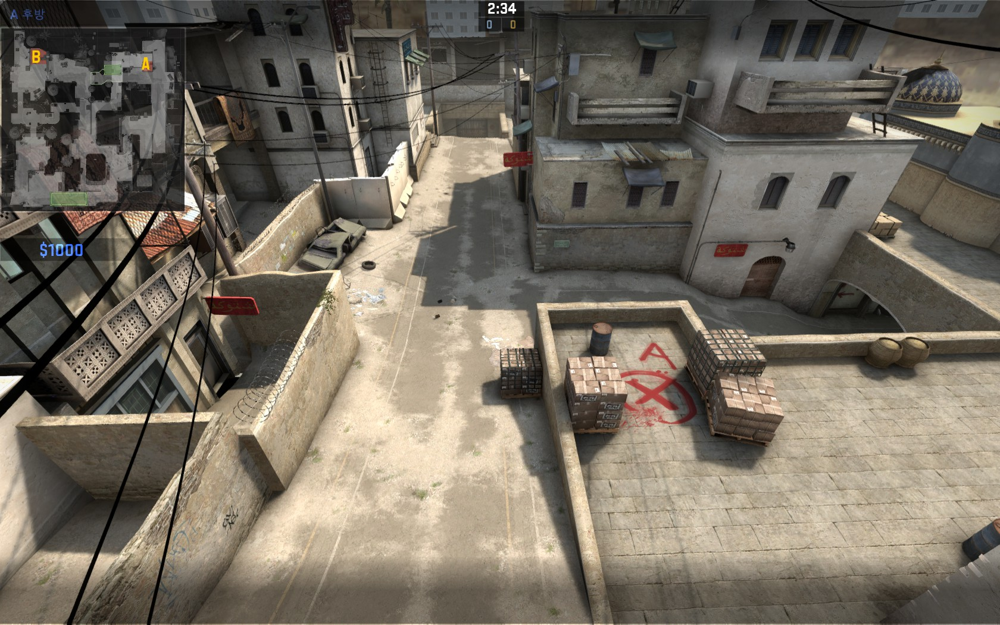
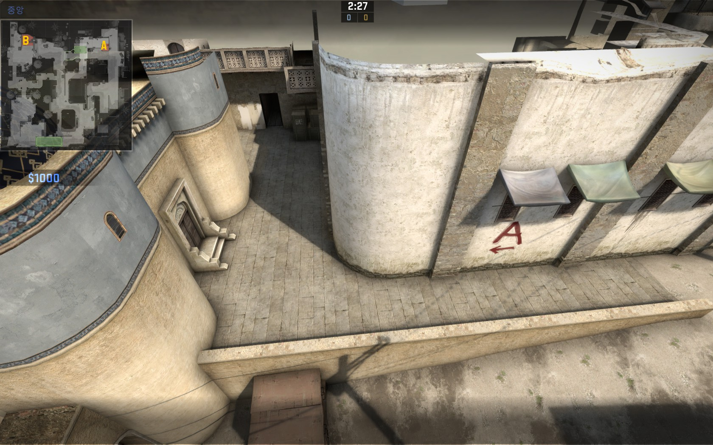
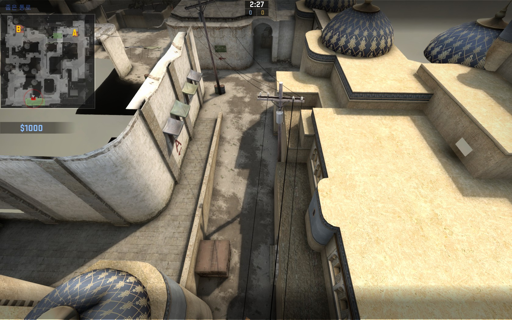
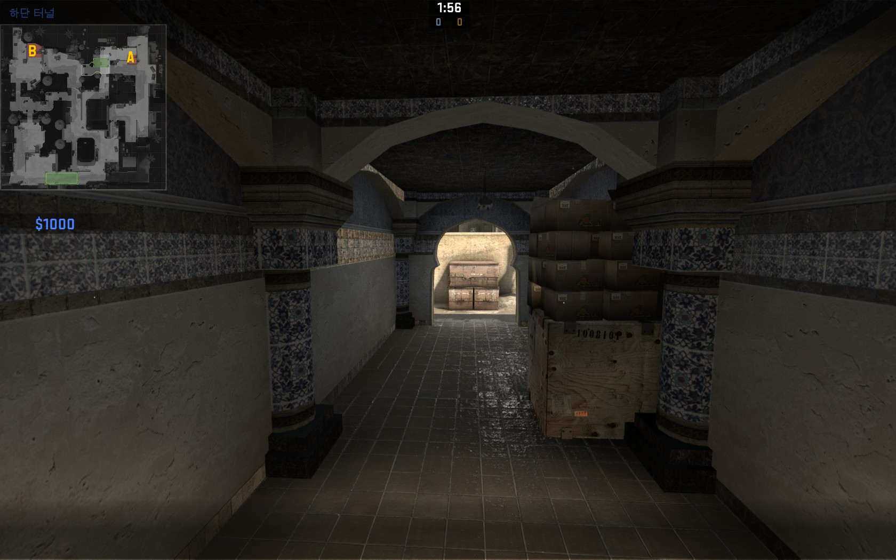
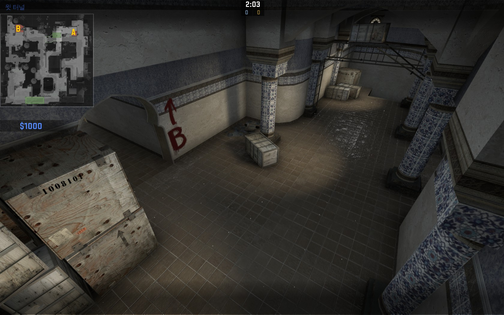
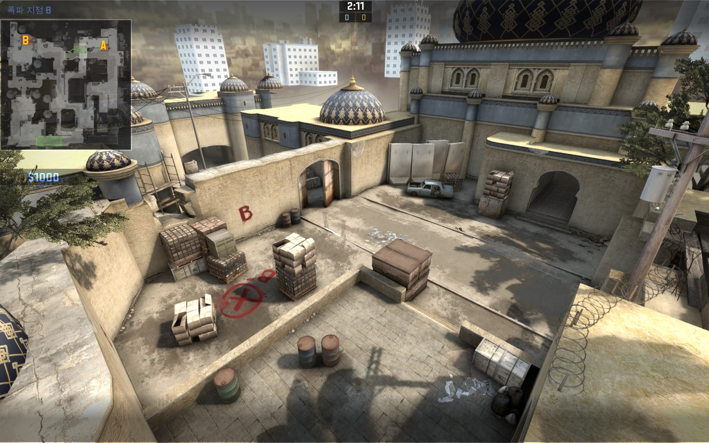

이맵은 카스의 기초라고 말할수 있는 맵이며, 그만큼 사람들이 많이 이 맵을 한다는 뜻입니다.
그러면 이 맵의 포지션을 함께 봅시다
일단 영어로 되어있지만 기본적인 포지션 이름이 나와있습니다. 물론 이걸 외우면 좋지만 이걸 안 외워도
밑에서는 한글로 포지션을 정리 할테니깐 걱정을 하지 마세요.

테러리스트가 바로 에이로 갈수 있는 첫번째 통로입니다.(두번째는 나중에 설명)
이 부분의 명칭은 에이롱 줄여서 말하면 에롱 혹은 al이라고 씁니다.
이 부분의 특징은 스나이퍼전이 많이 일어날수 있다는 점이다. 대태러부대(이하 시티)가 설치지역에(사진에서 a라고 표시 되어있는데)
대기를 하고, 테러리스트(이하 테러)가 벙커(포지션에서 pit이라고 나오는 곳)에서 숨으면 장거리로 서로를 잡을려고 합니다.

위의 사진으로 가서 오른쪽에 보면 "어? 뭔 통로가 있네?" 라고 발견하셨나요?
그 통로는 여기랑 통합니다.
이 통로의 명칭은 에이숏(솔직히 에이롱 보단 거리가 짧잖아요?)이라 하며 외국에서는 catwalk,as 이렇게 말합니다.
위에서 말한 에이롱과 나눠져서 들어가기도 하고, 밑에서 말할 센터에다가 연막을 던지고 빠르게 돌진 합니다.

드디어 결전지가 나오네요 여기를 센터 혹은 미드라고 부릅니다.
에이롱보다 훨씬 스나이퍼전이 많이 나오며 시티들이 설치 구역으로 각각 몇명 갔냐를 알수 있습니다.
여기서는 서로가 저격총이니깐 여기서 잡힌 사람은 돈이 엄청 많이 있지 않은 이상(죽었을때 최소 4000달러 이상), 다음 라운드때는 자칫하면 무기를 구입 못할수도 있습니다.

이 부분은 터널이라고 부릅니다. 영어로는 tunnel 더 짧게 써서 tun이라고 하죠.
여기는 테러가 b로 빠르게 갈려면 이 통로 밖에 없을 정도로 테러에겐 매욱 중요하죠
이 부분을 버린다는 건, '이번 라운드를 지겠다'거나 'b로 안가고 a로 가겠다' 이 둘중 하나죠

이 부분이 폭탄 설치지점 B입니다.
여기는 뚫기가 어렵다는게 장점이자 단점 입니다.
뭔 이상한 소리야? 라고 생각 하지만 실제로 뚫기 어렵습니다. B로 오는 방법은 센터를 통해서 오거나 아니면 터널을 통해서 오는건데,
터널은 일자형 즉, 엄폐물이 없어서 만약, 앞에 스나이퍼가 있다면 전부 다 몰살 당할수 있고, 센터를 통해서 오면 시티 시작지점과 에이에 있는 사람들이 센터를 볼수 있기 때문에 힘듭니다.